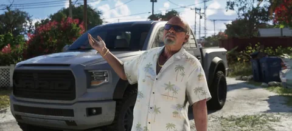

Pickup e fuoristrada
Vapid Caracara 4x4
Vapid Caracara 4x4 in GTA VI: pickup e fuoristrada. Ispirazione: Ford F-150 Raptor di seconda generazione. Visto in un media ufficiale, senza nome comunicato.
 Trailer 2, 0:16
Trailer 2, 0:16Immagini ufficiali © Rockstar Games / Take-Two Interactive. Provenienza e crediti.
L’essenziale
Il Caracara 4x4 porta nel gioco il Ford F-150 Raptor, un pickup pensato per correre veloce sugli sterrati più che per superare lentamente gli ostacoli. Le sue sospensioni a lunga escursione vengono dritte dalle gare nel deserto della Baja. Compare nel Trailer 2.
In due parole
Categoria pickup e fuoristrada: è qui che il Vapid Caracara 4x4 si colloca nella nostra banca dati. L’abbiamo visto nelle immagini ufficiali, senza etichetta. Il nome scelto è provvisorio e cambierà con la prima menzione dello studio. Compare nel Trailer 2 di maggio 2025, quello che segue Jason e Lucia attraverso lo Stato. Modello di origine americana, come buona parte dei veicoli di Leonida.
Quello che manca ancora (prezzo, prestazioni, dove comprarlo, cosa si può modificare) verrà da rilevamenti nel gioco, non da stime.
Il modello che lo ispira
L’accostamento scelto per questo veicolo: il Ford F-150 Raptor di seconda generazione. Nessuno in Rockstar ha confermato nulla. L’identificazione viene dal confronto con le immagini pubblicate.
A cosa serve questo tipo di veicolo
I pickup della serie hanno un cassone, una buona altezza da terra e spesso la trazione integrale. Sono i veicoli delle campagne, dei cantieri e delle paludi.
Identità
| Modello | Caracara 4x4 |
|---|---|
| Costruttore | Vapid |
| Stato | Visto in un media ufficiale |
| Categoria | Pickup e fuoristrada |
| Ispirazione reale | Ford F-150 Raptor di seconda generazione (accostamento della community) |
| Origine del modello | Modello americano |
| Fonte | Trailer 2 |
Scheda informativa
Quello che non è ancora pubblicato mantiene il suo stato: niente è inventato, e i costi d’uso non sono meccaniche confermate.
Come si ottiene
- Prezzo
- Prezzo in arrivo
- Acquistabile
- Acquisto da confermare
- Come si ottiene
- Ottenimento da confermare
- Dove trovarlo
- Posizione in arrivo
Prestazioni
- Accelerazione
- Da confermare
- Velocità massima
- Da confermareUna velocità massima non è una velocità di percorrenza.
- Frenata
- Da confermare
- Tenuta di strada
- Da confermare
Capacità
- Posti
- Da confermare
- Terreno
- stradaStimatoDedotto dal tipo di veicolo (categoria del sito), non da una scheda tecnica.
- Carico
- Da confermare
Costi d’uso
- Carburante
- Carburante: meccanica non confermataUn indicatore visto in un trailer non prova né un prezzo, né un consumo, né un costo d’uso.
- Manutenzione
- Manutenzione: meccanica non confermataPer GTA VI non è stato annunciato nessun costo di manutenzione dei veicoli.
- Riparazioni
- Riparazioni: meccanica non confermataLe riparazioni a pagamento di GTA V non provano niente per GTA VI.
- Assicurazione
- Assicurazione: meccanica non confermataPer GTA VI non è stata annunciata nessuna assicurazione dei veicoli.
- Rivendita
- Rivendita: meccanica non confermataUna rivendita conta solo se è possibile e se il suo prezzo è noto o scelto come ipotesi. Non riduce mai i soldi da pagare oggi.
Sulla mappa di Leonida
La mappa censisce gli indirizzi legati all’automobile. Le posizioni di ogni singolo modello verranno rilevate quando avremo il gioco in mano.


Pickup e fuoristrada
Caracara 4x4
Dove trovarlo: Posizione in arrivo
Luoghi legati a pickup e fuoristrada sulla nostra mappa (non è una posizione confermata per questo veicolo): Vapid Dealership, Baller Dealership, Marlin Motors, Status Auto Resort, Rideout Customs, Chip’s Body Shop, Watkins Auto Parts.
Luoghi collegati sulla nostra mappa
- Vapid DealershipConcessionarie · SouthsideVedi sulla mappa
- Baller DealershipConcessionarie · SouthsideVedi sulla mappa
- Marlin MotorsConcessionarie · SouthsideVedi sulla mappa
- Status Auto ResortConcessionarie · CrosstownVedi sulla mappa
- Rideout CustomsOfficine · CrosstownVedi sulla mappa
- Chip’s Body ShopOfficine · Key LentoVedi sulla mappa
- Watkins Auto PartsOfficine · Port GellhornVedi sulla mappa
Un errore in questa scheda? Ogni modello reale citato è una deduzione tratta dalle immagini ufficiali. Lo studio non conferma niente, e non usiamo nessun contenuto rubato. Se hai una correzione, la pagina Contatti serve a questo.